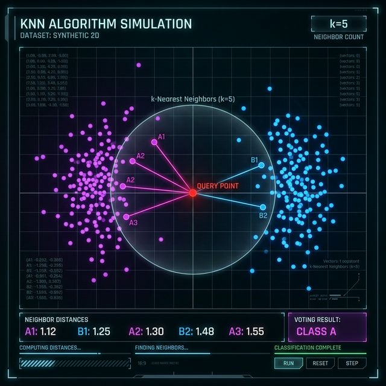
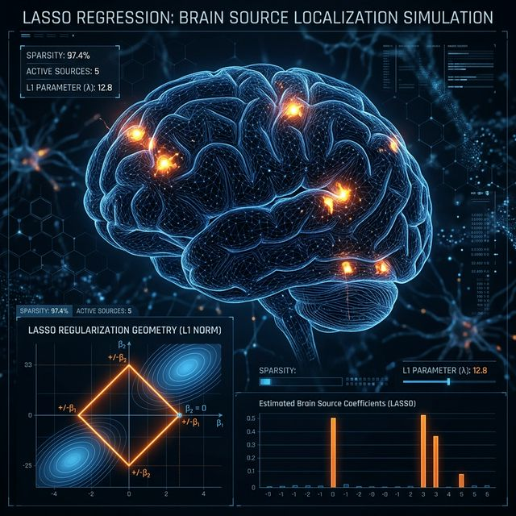
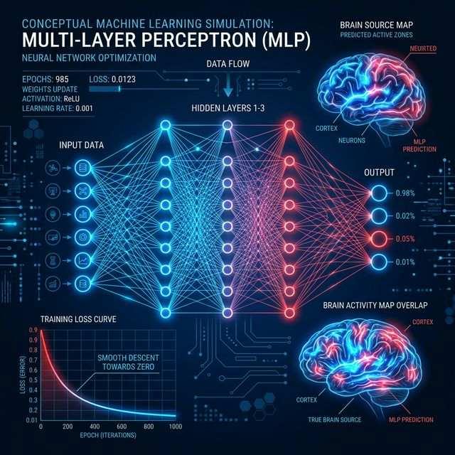

Réalisé pour Madame Valérie GAUTARD : Localisation des sources cérébrales.
Le projet MEG (Magnétoencéphalographie) repose sur une équation physique fondamentale qui régit la capture des signaux cérébraux :
L'objectif de ce travail pour Mme Valérie GAUTARD est de trouver un algorithme capable d'inverser cette équation pour retrouver \(Z\) à partir de \(X\).



| Méthode | Implémentation (Code) | F1-Score |
|---|---|---|
| Lasso | Lasso(alpha=0.5) | 1.2% |
| KNN | KNeighborsClassifier(k=5) | ~2.5% |
| MLP | MLPRegressor(200, 100) | 8.4% |
Résultat potentiel : 42.5%
Détails de l'InnovationPrésentation réalisée par Mohamed SELMANI pour Mme Valérie GAUTARD